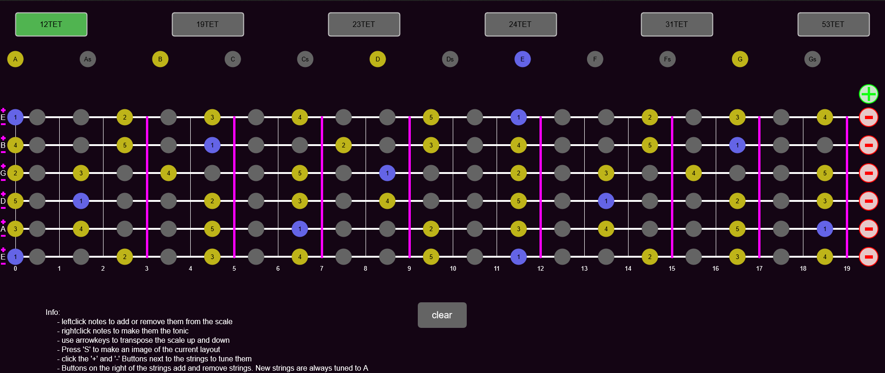

A processing sketch running in the browser, which allows you to visualize scales on a stringed instrument It allows for microtonal scales and fretboards. Any amount of strings are possible, which can also be tuned to any note
A view of the visualizer